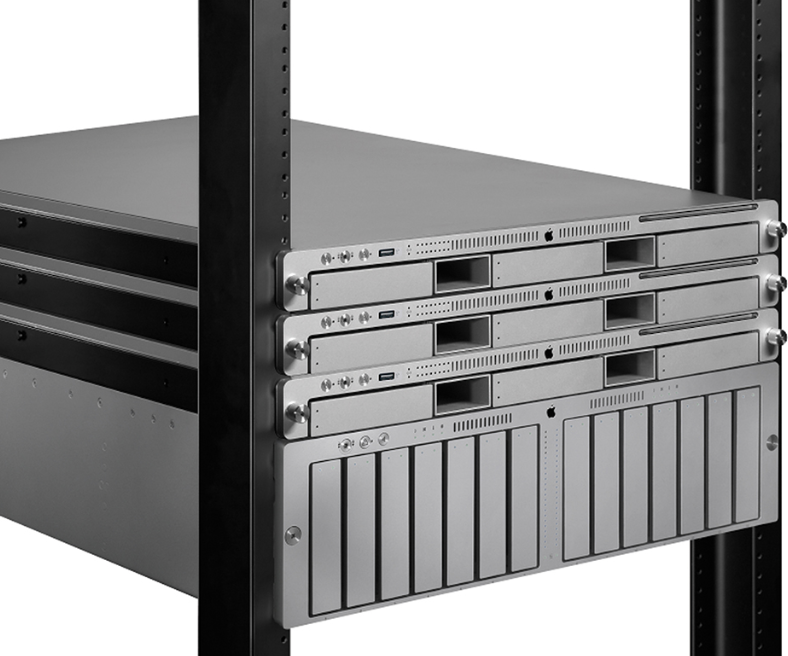

•Mac mini: Dirigido a usuarios de tipo medio-bajo. Es el más pequeño, económico y con menor potencia de la familia Mac, aunque con grandes prestaciones, potencial y capacidad en relación a sus dimensiones. Se presentó en enero de 2005.
•iMac: Dirigido a usuarios de tipo medio-profesional. Su principal característica es la unificación de todos los componentes del ordenador en una carcasa en la que se encuentra incluida la pantalla. Se presentó en 1998.
•eMac: Dirigido a usuarios de ámbito educativo. Basado en el iMac G3, cuenta con procesadores G4 y pantalla CTR de 17 pulgadas. Se presentó en abril de 2002 (descatalogado desde octubre de 2005).
•iMac Pro: Dirigido a usuarios de tipo profesional. Es el más potente de todos los iMac. Se presentó en el WWDC de 2017.
PORTATILES
•MacBook:Dirigido a usuarios de tipo medio-profesional. Es el portátil más vendido y popular de Apple, por su pequeño grosor y tamaño. Se presentó en 2006. Retirada del mercado el 20 de julio de 2011. El 9 de marzo del año 2015, Apple volvió a presentar el dispositivo con el nombre de 'Macbook' y está dirigido al usuarios de tipo medio-bajo. Este portátil es mucho más delgado que el MacBook Air considerándolo actualmente como el portátil más delgado del mundo.
•MacBook Air: Dirigido a usuarios de tipo medio-bajo. Se presentó en enero de 2008 como el ultraportátil de apple, el ordenador más delgado del mundo después de el "MacBook" presentado el 9 de marzo del año 2015.
•MacBook Pro: Dirigido a usuarios de tipo profesional. Similar al MacBook, solo que con más potencia y rendimiento. Se presentó en enero de 2006.
SERVIDORES

•Xserver:Dirigido a profesionales y empresas. Potente servidor de doble núcleo Intel Xeon. (descatalogado desde 31-01-2011).
•MacPro Server:Versión especial del Mac Pro con las mismas prestaciones que el Xserve.
•Mac Mini Server:Versión especial del Mac Mini con dos HDD, no cuenta con unidad de discos ópticos.
OTROS DISPOSITIVOS DE APPLE
IPOD
El 23 de octubre de 2001, Apple presentó el iPod, un reproductor de audio digital. Este dispositivo ha evolucionado para incluir a diversos modelos orientados a satisfacer las necesidades de los diferentes usuarios. El iPod es el líder del mercado en reproductores de música portátiles por un margen significativo, con más de 100 millones de unidades enviadas a partir del 9 de abril de 2007
IPHONE
En la Conferencia Expo en enero de 2007, Steve Jobs presentó el anticipado iPhone, una convergencia de Internet habilitado para el iPod y los teléfonos inteligentes.Desde ese entonces cada año se ha ido presentando nuevos telefonos inteligentes con mejoras. El actual es el Iphone X con diversos terminales:el iPhone XS, iPhone XS Max y el iPhone XR. Siendo el iPhone XS Max el teléfono con la pantalla más grande que Apple a presentado en su historia con 6.5' pulgadas. A la vez que el iPhone XR es el más económico de esta nueva generación, estando por debajo del precio natural de sus competidores de gama alta.
APPLE TV
En la conferencia Macworld de 2007, Jobs hizo una demostración de Apple TV,un dispositivo de vídeo destinado a unir la venta de contenidos de iTunes con los televisores de alta definición. El dispositivo se conecta a la TV del usuario y sincroniza, ya sea a través de Wi-Fi o de red cableada, con la librería iTunes de una computadora, desde donde se emite el flujo de información. El día 9 de septiembre de 2015 se presentó al público la cuarta generación de la Apple TV, teniendo esta una App Store desde donde se pueden descargar apps, como por ejemplo juegos.
IPAD
El iPad es una nueva clase de dispositivo desarrollado por Apple Inc. Anunciado el 27 de enero de 2010, se sitúa en una categoría entre un teléfono inteligente y una notebook. Las funciones son similares al resto de dispositivos portátiles de Apple Inc. como es el caso del iPhone o iPod touch aunque la pantalla es más grande y con respecto al hardware es más potente, funciona sobre una versión adaptada del sistema operativo de iPhone (iOS), con una interfaz de usuario rediseñada para aprovechar el tamaño mayor del dispositivo y la capacidad de utilizar el servicio iBookstore de Apple con la aplicación iBooks (software para lectura de libros electrónicos). Posee una pantalla con retroiluminación LED, capacidades multitáctiles de 9,7 pulgadas (24,638 cm), de 16 a 64 gigabytes (GB) de espacio tipo memoria flash, Bluetooth, y un conector dock de 30 pines que permite la sincronización con el software iTunes y sirve de conexión para diversos accesorios
SOFTWARE
Apple desarrolla su propio sistema operativo para ejecutarse en Mac, macOS. Apple también desarrolla independientemente títulos de los programas informáticos para su Mac OS X el sistema operativo. Apple desarrolla gran parte del software que incluye con sus ordenadores. Un ejemplo de ello es el paquete de software iLife, orientado al consumidor que contiene iDVD, iMovie, iPhoto, iTunes, iWeb y GarageBand. Para la presentación, diseño de página y de procesamiento de textos, está disponible iWork, que incluye Keynote, Pages y Numbers. Asimismo, iTunes, el reproductor de medios QuickTime y el navegador Safari están disponibles como descargas gratuitas, tanto para macOS como para Windows.